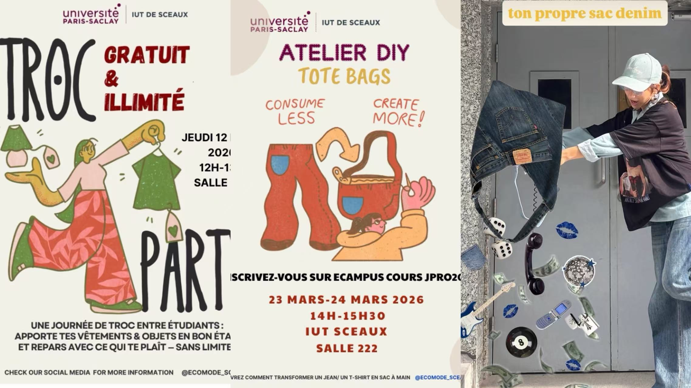
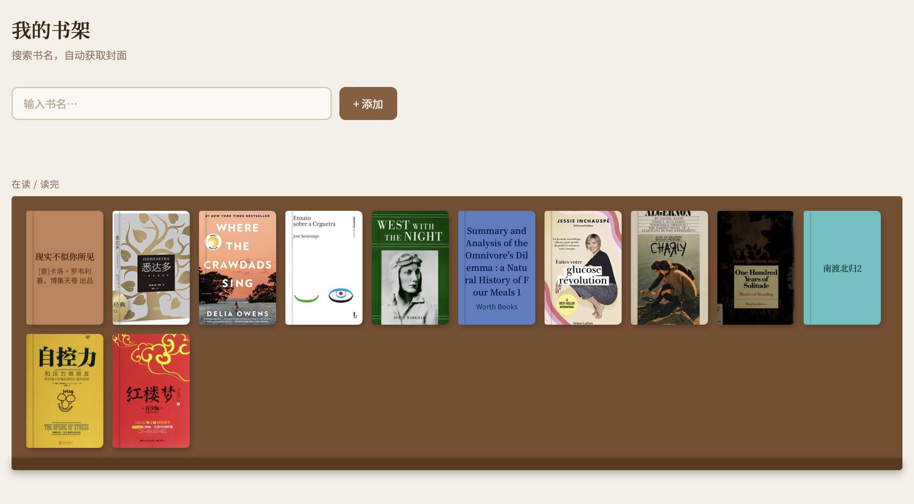

Bienvenue chez moi.
Touchez à tout.
SHANG Xiuchang — étudiante en BUT GEA, parcours CG2P · Université Paris-Saclay.
Clique sur un objet de la pièce — certains cachent des secrets…
Ta progression dans la pièce
SHANG
Xiuchang
Bonjour ! Je suis 商脩畅 (Shang Xiuchang). Étudiante en gestion à l'Université Paris-Saclay, stagiaire dans des fonds d'investissement à Pékin. Un jour, un flowchart de montage de fonds bancal m'a appris quelque chose : ce qui ressemble à de l'ambiguïté dans une organisation, c'est souvent une structure qui n'a pas encore été écrite. J'aime écrire ces structures — dans un modèle Excel, un processus, un site web. Mon objectif : devenir cheffe de produit, la passerelle entre ceux qui définissent le besoin et ceux qui construisent.
- Comptabilité financière & de gestion · Contrôle de gestion
- Fiscalité · Droit civil & commercial · Économie (micro & macro)
- 1re de ma promotion en Gestion des opérations
- 20/20 en Mathématiques et en Traitement de l'information (Excel, Power Pivot, Power BI)
- Analyse et visualisation de données · SQL (en cours)
- Organisation étudiante — planning & organisation (2025–2026, Paris) : conçu et vendu du merchandising campus, +2 000 € de bénéfice pour le département ; sélection produit, pricing et gestion des stocks en autonomie.
- Partenariat avec l'association Emmaüs Défi : trois événements à thème coordonnés de bout en bout — lieu, promotion, bénévoles.
- 📖 Grande lectrice — d'où Bookshelf, ma bibliothèque en ligne
- ♻️ Mode durable & seconde main — d'où Eco-Mode
- 🎨 Design d'affiches, montage vidéo — et peinture
- 🐕 Plutôt chien que chat (il y a un chien caché quelque part dans la pièce…)
Eco-Mode
Faire circuler plutôt que consommer
« Ce monde regorge déjà de richesses matérielles. Ce dont nous avons besoin, ce n'est pas d'acheter davantage, mais de faire circuler ce qui existe déjà. »
Dans le cadre du projet tutoré, j'ai rejoint un groupe de trois étudiants pour co-construire Eco-Mode, un projet centré sur la mode durable et la consommation responsable.
L'idée de l'échange de vêtements entre étudiants vient de moi. J'ai également conçu les affiches pour les événements organisés cette année.
Le troisième événement, deux ateliers de upcycling, a été notre plus grande réussite. Nous avons récupéré des jeans auprès d'Emmaüs en amont, puis organisé deux séances où les participants transformaient ces jeans en sacs. J'ai pris en charge l'enseignement pendant les ateliers, ainsi que le tournage de la vidéo de promotion de l'événement.

Bookshelf
Construire l'outil qui me manquait
Je lis de plusieurs façons — livres numériques, papier, emprunts — et je n'avais aucun endroit pour centraliser tout ça. J'ai donc décidé de créer Bookshelf : une bibliothèque personnelle en ligne, où je peux rechercher un livre, récupérer automatiquement sa couverture via l'API Open Library, et l'ajouter à mon étagère virtuelle.
Le projet a été entièrement développé sur GitHub, directement dans l'éditeur en ligne. La fonctionnalité qui m'a demandé le plus de travail : le stockage local. Ma bibliothèque devait persister d'une session à l'autre. J'ai consulté l'IA pour comprendre comment implémenter cette fonctionnalité — mais c'est moi qui ai modifié le code directement, après avoir compris la logique.
Le site est aujourd'hui fonctionnel et je l'utilise au quotidien. Des améliorations restent à venir — notamment une fonctionnalité de critiques de livres. Une limite existe : les livres absents d'Open Library, souvent des éditions en chinois, ne peuvent pas être ajoutés.
Visiter Bookshelf ↗
L'IA va-t-elle nous remplacer ?
Une analyse critique — à contre-courant
En binôme, nous avons réalisé une présentation sur l'impact de l'IA sur l'emploi. À rebours des discours optimistes, nous avons défendu une thèse plus nuancée : l'IA risque d'accélérer la polarisation économique et de créer une nouvelle classe de travailleurs sans perspectives de reconversion.
Nos sources : un rapport McKinsey sur les compétences à l'ère de l'IA, et des déclarations du PDG d'Anthropic alertant sur l'émergence d'une « underclass » de travailleurs à très bas salaires.
Et au-delà de la salle de classe…
Mon rapport à l'IA a commencé au lycée, en cours de biologie : la pensée est portée par des neurones qui s'allument et s'éteignent — en quoi cela différerait-il de zéros et de uns ? Si assez d'unités mises bout à bout font un esprit, où passe exactement la frontière entre une idée et la prédiction d'un modèle de langage ? Je n'ai pas la réponse, et je ne crois pas que quiconque en ait une définitive. Pour chercher un vocabulaire, j'ai suivi des cours en ligne de philosophie : histoire de la philosophie occidentale (Université Renmin de Chine), philosophie de Kant (HUST).
Une question plus concrète m'occupe : le droit d'auteur. Des tribunaux chinois ont récemment reconnu qu'une image générée par IA pouvait être protégée. Mais je peins, et beaucoup d'illustrateurs que je connais voient les choses autrement : pour eux, une image IA est cousue avec les restes du travail d'artistes humains — une image sans âme. Le monde technique défend l'usage ouvert des données ; la communauté artistique refuse cette logique. Je ne sais pas qui a raison, et il me semble qu'il faudra des gens formés pour en juger avec rigueur et soin.
En stage, j'utilise l'IA tous les jours pour travailler plus vite. Mon supérieur voulait lui aussi un assistant IA, mais craignait que conserver les informations de la société dans le cloud n'expose des données sensibles, sans responsable identifiable en cas de fuite. Cette conversation m'est restée : si l'IA doit changer le travail des organisations au lieu de dormir sur une étagère, fuite, contrefaçon et responsabilité devront être affrontés — pas évités.